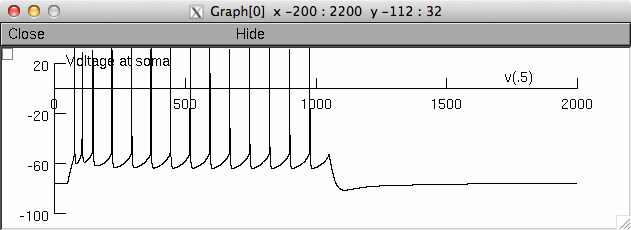
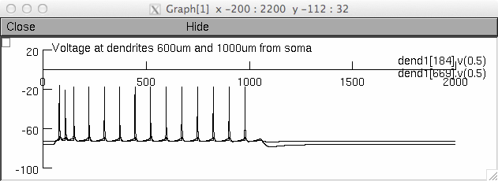

###########
Description
###########
NEURON source code for the model used in Reetz et al 2014 (Protein
kinase C activation mediates interferon-beta-induced neuronal
excitability changes in neocortical pyramidal neurons; Journal of
Neuroinflammation. doi: 10.1186/s12974-014-0185-4
http://www.ncbi.nlm.nih.gov/pubmed/25359459).
The HCN1 and HCN2 models were also used in Stadler et al. 2014
(Elevation in type I interferons inhibits HCN1 and slows cortical
neuronal oscillations. Cerebral Cortex. doi:10.1093/cercor/bhs305
http://www.ncbi.nlm.nih.gov/pubmed/23042740)
This code was contributed by Konstantin Stadler.
============
Background
============
Type I Interferons (IFNs) elevate the excitability of neocortical
pyramidal neurons by attenuating the rheobase and increasing the F/I
gain. The modulation of multiple ion channels underlies the effect,
however, which channels are involved and how the interferon signalling
cascade is linked to these channels is unknown.
We use an in silico model of a neocortical layer 5 neuron to test
multiple single and combined current modulation which potentially
could account for the change in firing behaviour.
The amount and type of modulation necessary to replicate the
interferon effects suggests the activation of PKC as the main link between the
ion channels and the type I IFN signalling cascade.
============
Content
============
- mosinit.hoc
Initialises and starts the model, see Usage_ below
- LayerVrun.hoc
Main hoc to initialize the model, calls LayerVinit.hoc
- LayerVinit.hoc
Assign general and channel parameters for the Layer V neuron
- ./sub/OwnInit.hoc
Replaces the standard init routine
- ./sub/ReducExp.hoc
Experiments with reduced current densities/properties
- ./sub/util.hoc
Several function to work with LayerVrun
- ./geo/Ri18geo.hoc
Geometry
- various mod files for channel descriptions
============
System
============
MS Windows 7, NEURON 7.1 and 7.3 (64bit, other versions have not been
tested)
============
Usage
============
When the folder is compiled using NEURON's mknrndll (mswin or mac os
x) or nrnivmodl (linux/unix) the simulation can be started with
"mosinit.hoc" (reproduces the data underlying Fig 1B - only some
selected traces are shown there).
**NB: This will take about two hours on a Intel i7-860**
The calculated volatage traces and FI curves are saved in:
- CCctrl.txt
* first row: format of the saved matrix
* first column of the matrix: time vector (ms), the remaining
columns are the voltage traces (mV)
- CCpkc.txt
* same format as above
- CCctrl_AP.txt (number for AP for every current step)
- CCpkc_AP.txt (number for AP for every current step)
To just init the model call "LayerVrun.hoc", then:
- see "util.hoc" for how to start a CCIV
- see "ReducExp.hoc" for how to reduce current densities
To reproduce fig 1C presented in the paper change the
conductances here as stated in the article.
The geometry of the model is based on Stuart and Spruston 1998
(http://senselab.med.yale.edu/modeldb/ShowModel.asp?model=3677,
Ri18). To facilitate access to the different sections, these were
cumulated in
- SectionList Axon: the axon
- SectionList SomaDend: everything except the axon
- SectionList Soma: the Soma
- SectionList ApikalDend: apical dendrite
- Array ApikalTrunk: trunk part of the apical dendrite
*Default accessed section*: dend1[21] (that's the middle of the soma)
To use the model interactively with the GUI you can for example set
the current injections to 0.5 nA and press Init & Run. After a couple
of minutes the following traces will be generated:


------------------------------------------------
:Author: Konstantin Stadler
:Version: 20140217
20150524 Update from Ted Carnevale: Changed integration method from
euler to derivimplicit which is appropriate for simple ion
accumulation mechanisms. See Integration methods for SOLVE statements
http://www.neuron.yale.edu/phpBB/viewtopic.php?f=28&t=592